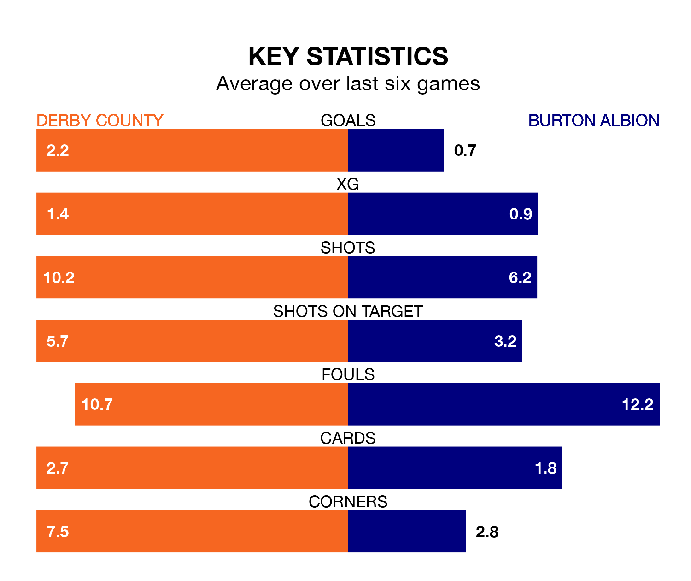

Derby County are heavy favourites to keep all three points at home in Monday's late kick-off against Burton Albion.
The Rams, who sit third in EFL League One with 25 games played, are priced at 1.4 to seal victory at Pride Park Stadium.
Sitting 15 places and 21 points behind them in the table, Burton are 9.5 to win with *Betting Company*, while the draw is at 4.6.
With 47 goals in 25 games so far this season, Derby are the league's second-highest scorers with 1.9 goals per game. And they are conceding fewer than average, letting in 24 goals at a rate of 1.0 per game.
Burton, meanwhile, are below average scorers, with 0.8 goals per game, compared to a league average of 1.3. They have conceded 1.3 goals per game.
With Joe Wildsmith between the sticks, County can rely on one of the league's safest pair of hands. He has kept 10 clean sheets in his 24 appearances this season, and only two other 'keepers – Portsmouth's Will Norris and Bolton Wanderers' Nathan Baxter – have been able to prevent the opposition scoring on more occasions in EFL League One.
In Albion's net, Maxime Teremoana Crocombe has six clean sheets in 24 games. He has conceded a goal every 74 minutes, 60% more often than the 118 minutes between goals for Wildsmith.
The Rams are in good form in EFL League One, with four wins and a draw from their last six games.
With two wins and two draws over that period, the Brewers' form is worse – they have taken eight points from 18, compared to the home side's 13.
In the last three years, Derby and Burton have played each other on three occasions. Derby won two of them and they drew once.
Their last meeting was on August 12, when Derby won 3-0 away.
Derby's last match was on January 6, a 3-1 win against Fleetwood Town, with James Collins, Nathaniel Mendez-Laing and Tom Barkhuizen getting the goals for the Rams.
Burton drew 1-1 with Wycombe Wanderers last time out, also on January 6, with Beryly Lubala on the scoresheet.
Updated: 11:31, 09/01/24